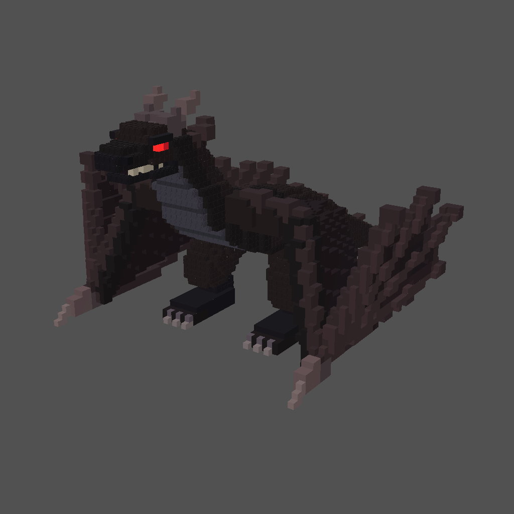
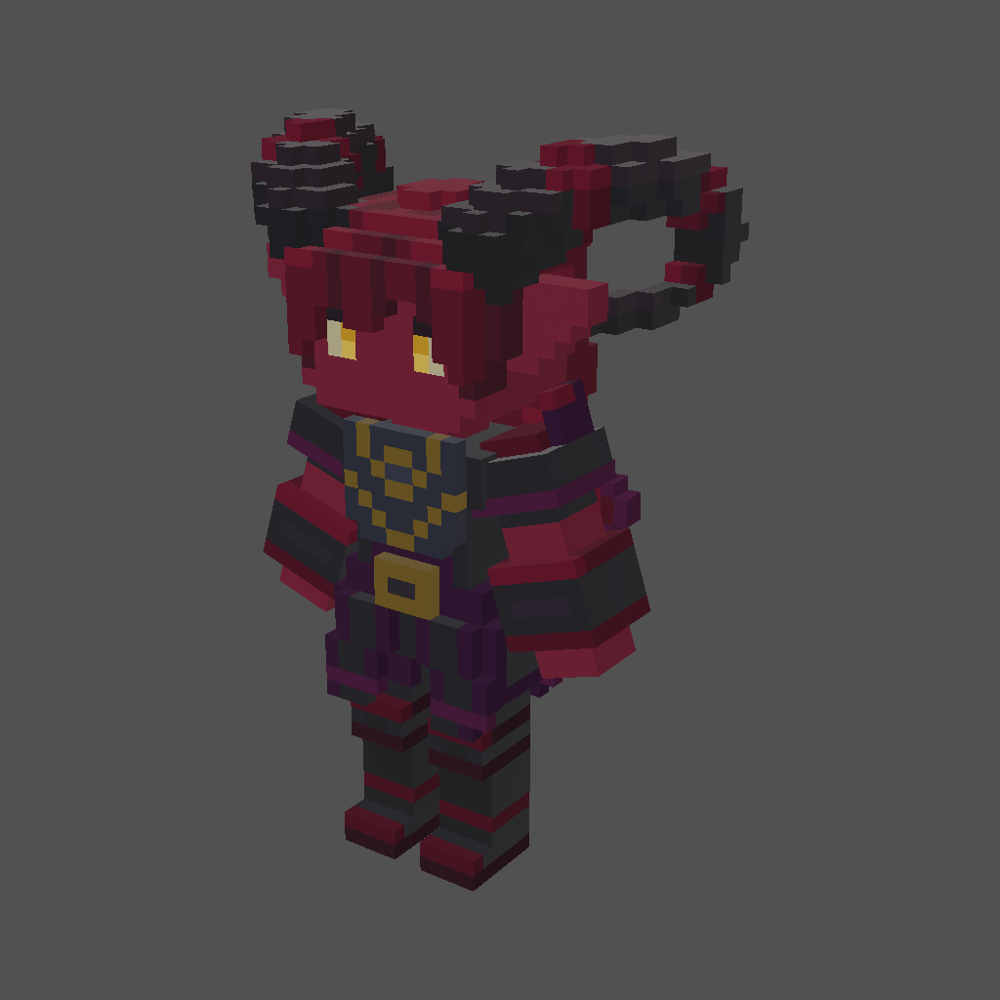
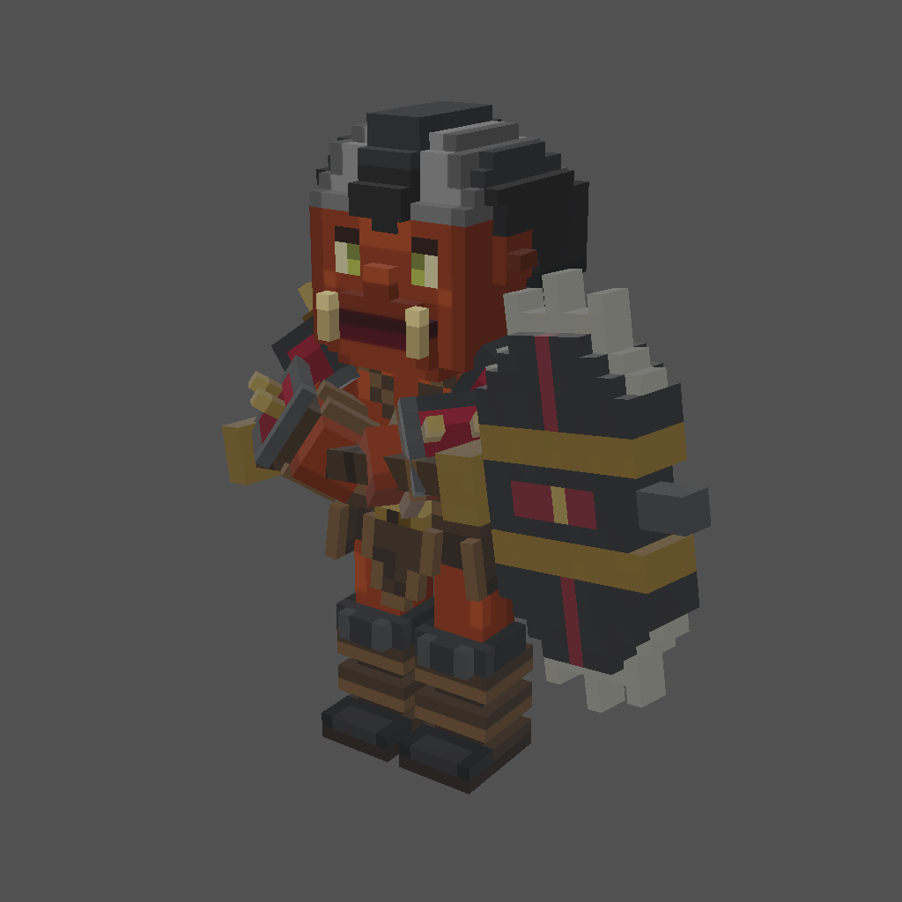
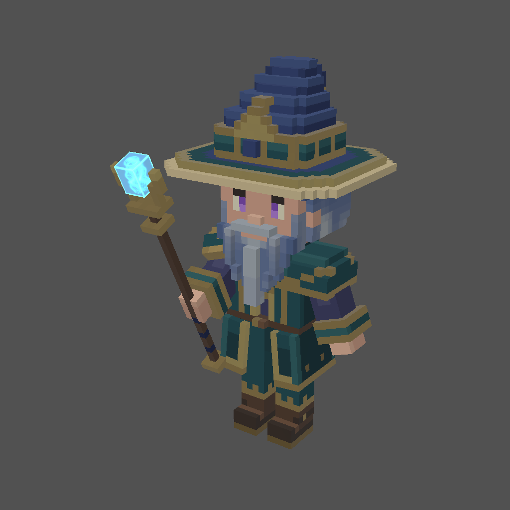
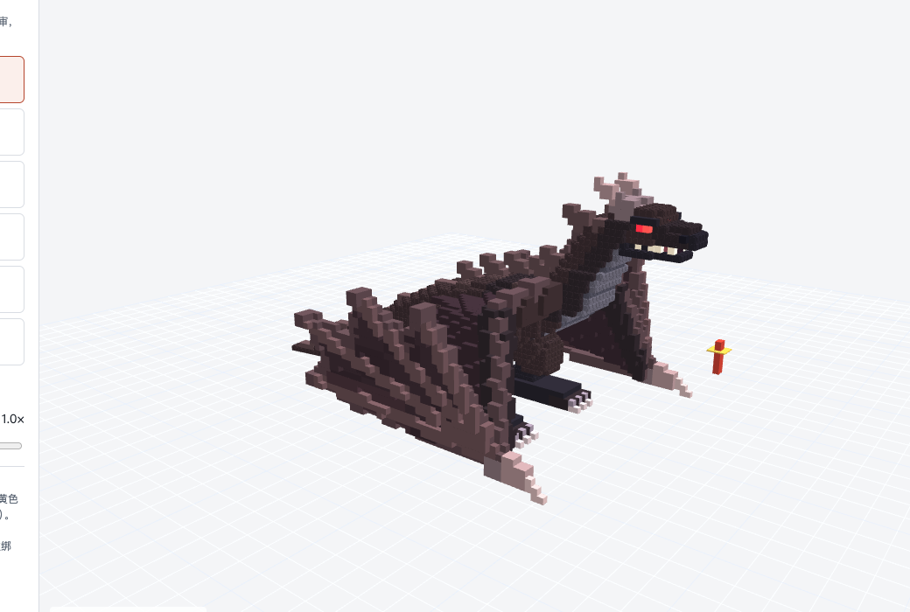
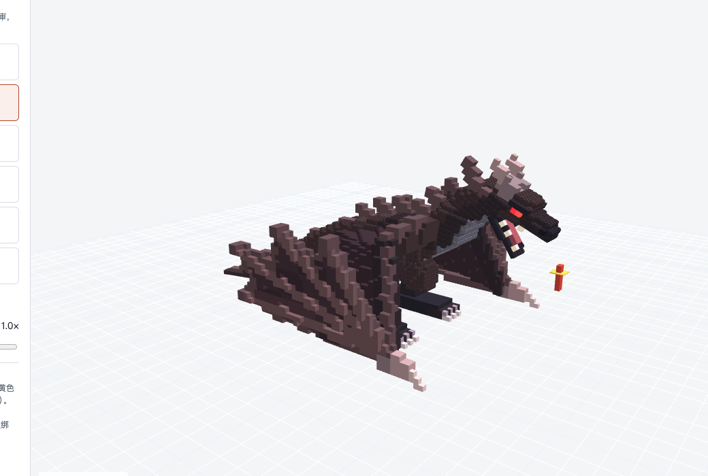
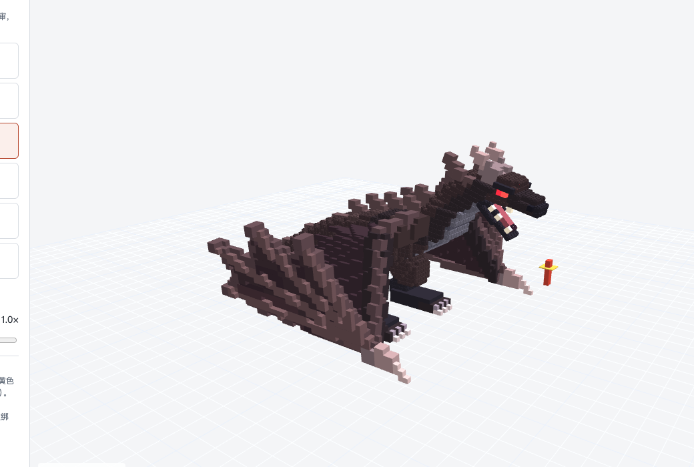
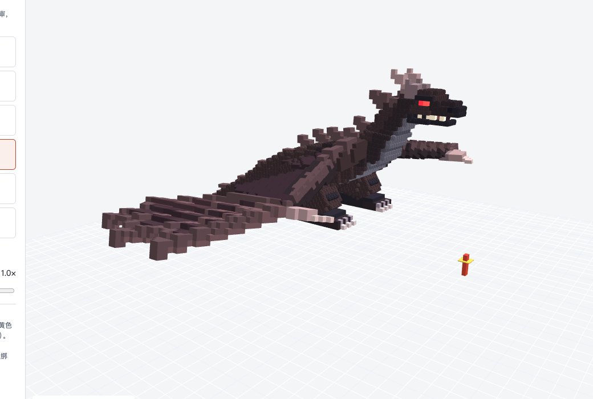
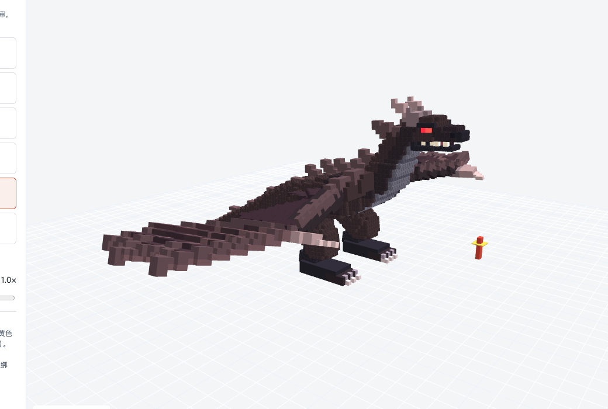
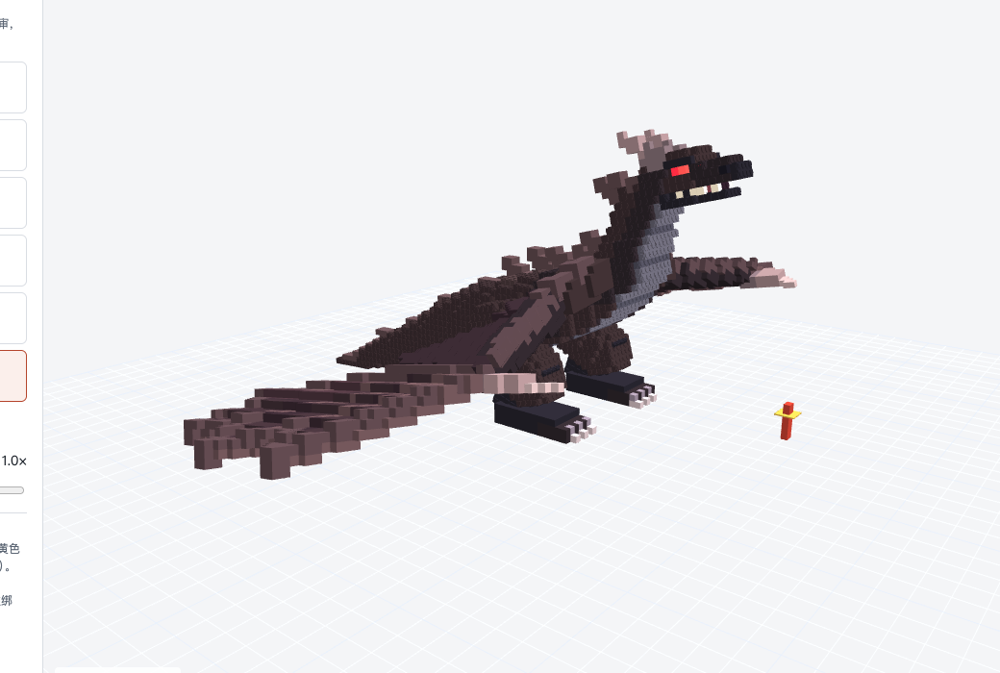

造化素材库 · 能当 Boss 看看的带动作模型
2026-11-05 22:10 资产轨检索。EA 库「动作/动态模型」共 18 个、「模型」共 508 个；用 boss / monster / beast / giant / sea creature / serpent / dragon 等词检索。全部是体素风格，只供评审参考，不进游戏。
一、候选（4 个）

黑曜石翼龙四足西方龙，膜翼，约 15.5×10.5×21.3 m，6 段动作
唯一的大型怪物
唯一的大型怪物

恶魔Q 版大头比例；弯黑角、黑紫板甲、红皮肤
最有 Boss 气质的人形
最有 Boss 气质的人形

兽人战士Q 版大头比例；獠牙、皮甲、带刺大盾
近战型
近战型

老法师Q 版大头比例；银蓝长须、青袍金边、水晶法杖
配色和「白须老父亲」意象最接近
配色和「白须老父亲」意象最接近
库里其余带动作的模型是女骑士、弓手、矮人工匠和两名现代雇佣兵，不适合当 Boss；静态模型类里没有任何生物，全是建筑、道具、地形。
二、黑曜石翼龙的 6 段动作
打开可交互的动作播放器 →
待机 Idle3.0 秒，循环

咬击 Attack_Bite1.5 秒

吐息 Attack_Breath3.0 秒（只有身体动作，没有火焰特效）

飞行 Fly_Loop1.2 秒，循环

降落 Land2.8 秒

起飞 Takeoff2.5 秒
三、和龙王需求对照
| 需求（龙王重新设计会定稿） | 翼龙 | 恶魔 / 兽人 / 法师 |
|---|---|---|
| 东方神龙、蛇形长躯 18 m、几乎无爪 | ✗ 四足 + 膜翼 | ✗ 人形 |
| 写实东方神话风格 | ✗ 体素 | ✗ 体素 |
| 身体沿脊柱连续弯曲（行波、盘绕） | ✗ 刚性骨骼，每块体素整块转 | ✗ |
| 天工引擎版本 | 0.4.10 制作，我们是 0.4.19，未验证 | 同左 |
| 版权 | README 写明原始来源的再分发权利未确认 | 需逐个核对 |